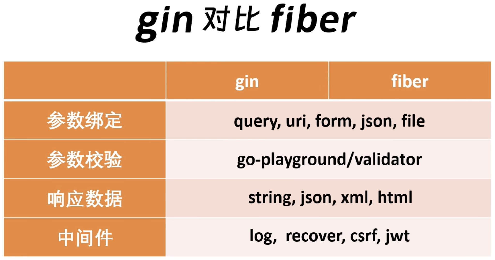

Go语言开发环境配置
安装
先下载go的安装包
cd /tmp
wget ***.com
***.com现在没被墙
wget ***.com
上面的连接可能因为网络问题无法访问,可以用下面的镜像
wget ***.com
wget ***.com
wget ***.com
已安装过go的:
sudo rm -rf /usr/local/go && tar -C /usr/local -xzf go1.16.4.linux-amd64.tar.gz
go1.16.6是当前最新版,以后会变化
未安装过go的:
sudo tar -C /usr/local -xzf go1.16.4.linux-amd64.tar.gz
而配置环境变量
vim ~/.zshrc
export PATH=$PATH:/usr/local/go/bin # $PATH 表示把之前已有的PATH都引用，在此基础上增加一条路径
export GO111MODULE=on # 可选,默认不设置为auto
保存退出并用 source ~/.zshrc 激活
验证安装
go version
GOROOT和GOPATH
两者互相对立。
- GOROOT：Go安装目录
- GOPATH：第三方库默认安装目录
查看方式：
go env GOROOT
go env GOPATH
go proxy设置
不设置的话因为众所周知的网络原因，go get Github上的第三方库可能失败。
***.com # 这个也可以 ***.com
go env -w GO111MODULE=on # -w 表示写入
go env -w GOPROXY=***.com
# 查看
go env GOPROXY
Go开发基础知识
goroutine(协程)基本模型和调度设计策略
参考视频
go指针的取址和取值
& 取址
* 取值
Go开发框架
Gin
Gin 是一个用 Go (Golang) 编写的 HTTP Web 框架。 它具有类似 Martini 的 API，但性能比 Martini 快 40 倍。
- API Docs: ***.com
- Github Repo: ***.com
- Official Middleware: ***.com
如果要开发自己的中间件，注意名称格式 + nameOfMiddleware (***.com
安装
go get -u ***.com/gin-gonic/gin
Fiber
official url:
- ***.com 有框架基本用法示例
- ***.com
- ***.com 有各种实现示例
各种中间件:
- ***.com
- ***.com
- ***.com
安装要求：Go version >= 1.23，以后随其升级可能会更新版本要求
go get -u ***.com/gofiber/fiber/v3
Beego
gRPC
go-micro
Gin VS Fiber 性能对比
两者都自称是最快的http库
相同点：

高频常用命令
go静态编译tips
交叉编译的参数信息参考官网：***.com
// go cross compiling
GOOS="linux" GOARCH="amd64" go build simple_http_server.go
// 默认go build包含debug信息和符号表，减少生成二进制文件大小约30%的方法
go build -ldflags "-w -s" xxx.go
// 交叉编译+减少文件大小
GOOS="linux" GOARCH="amd64" go build -o shs -ldflags "-w -s" simple_http_server_v2.go
go mod
go mod init // 生产go.mod文件
go mod download // 下载go.mod文件中指明的所有依赖
go mod tidy // 整理现有的依赖
go mod graph // 查看现有的依赖结构
go mod edit // 编辑go.mod文件
go mod vendor // 导出项目所有的依赖到vendor目录
go mod verify // 校验一个模块是否被篡改过
go mod why // 查看为什么需要依赖某模块
关于go mod vendor的使用注意：
1.执行go mod vendor将删除项目中已存在的vendor目录；
2.永远不要对vendor中的依赖库进行二次修改、更改;
3.go命令不检查vendor中的依赖库是否被修改；
需要注意的环境变量
通过go env命令来进行查看
GO111MODULE
设置命令：$ go env -w GO111MODULE=on
入门推荐
- A Tour of Go -- 英文官网不能访问的，可以考虑本地搭建。 中文版点击这里，翻译有些问题，建议看英文版
- the way to go
- Build Web Application with Golang 这本书就不错，Beego的作者写的
- golang developer roadmap RoadMap系列，可参考
- awesome go
- Go语言101
- Let's Go!
- Go语言圣经中文版
进阶推荐
- Go官方文档--必读
- Go夜读视频
- Go夜读Github
- Go语言设计与实现
论坛社区
因为学习资料的时间都不太够，其实去逛论坛的时间真的不多，但是还是需要适当与大家交流学习的。
- TalkGo
代码规范
- Uber Go Style Guide
- Uber Go 语言编码规范中文版
- Go工程结构参考
实体书推荐
最简单的入门方法，找一本好教程，对着例子敲一遍练手。
Go语言实战-- Go in Action, 快速过一下基础。Go程序设计语言 The Go Programming Language-- 没错，就是那本Go语言圣经。（如果是有经验的开发者，其实建议学这个的同时开始做实际项目）Golang高级编程-- 如果看完上面的，可以看这本扩充下，电子版是开源的。
Blog推荐
- 面向信仰编程
- 峰云就她了
- Golang 快速入门 Go For Pythonisa
多版本管理工具GVM
什么是 gvm
gvm，即 Go Version Manager，Go 版本管理器，它可以非常轻量的切换 Go 版本。对比其他语言，通常也有类似的工具，如 NodeJS 的 NVM，Python 的 virtualenv 等。
用GVM最好是安装go 1.5+的版本，1.5以下版本看官方解释。
PS：注意设置gvm后可能引发系统GOPATH自定义配置失效的问题。
GVM官方仓库 如何灵活地进行 Go 版本管理
Installing
To install:
bash < <(curl -s -S -L ***.com
Or if you are using zsh just change bash with zsh:
zsh < <(curl -s -S -L ***.com
Installed GVM v1.0.22
Please restart your terminal session or to get started right away run
`source /Users/xxxx/.gvm/scripts/gvm`
Uninstalling
To completely remove gvm and all installed Go versions and packages:
gvm implode
常用命令
gvm list 查看本地系统已go版本
gvm listall 查看可安装的go版本
gvm install go1.13.5 安装指定go版本，这里是1.13.5
gvm use go1.13.5 [--default] 选择启用指定版本，果想默认一个版本，加上 --default 设置即可
gvm 目录结构
gvm 是 shell 编写，默认是安装在 $HOME/.gvm/ 目录下。查看下它的目录结构会有助我们了解它的实现。
archive # go 源码
bin # gvm 可执行文件
environments # 不同环境的环境变量配置
scripts # gvm 的子命令脚本
logs # 日志信息
pkgsets # 每个独立环境 gopath 所在路径
A tour of go的踩坑，和GOPATH设置相关
本地安装 Go Tour（包含中文版本）
好用的插件
pip install when-changed
when-changed -r -v -1 . go run hello.go
只要hello.go变动，就会重新编译执行
其它参考
- 10分钟学会go module
- 为什么有 go.mod 还要引入 go.sum
基本知识
1.接收器该定义为值还是指针？
- 1.如果方法需要修改接收器，则接收器使用指针；
- 2.从性能考量：
- a. 如果结构体很大，应该使用指针接收器，会减少内存拷贝
- b. 对于基本类型、切片和小结构等类型，使用值接收器是非常廉价的
- 3.方法集中的接收器应该保持一致，要么全为值，要么全为指针
2.Go使用两种声明方式的区别
使用标准声明（var开头）：
- 1.定义全局变量
- 2.暂时不确定变量值
- 3.巧用"零值"
其他情况和定义局部变量时应使用短声明（:=）
Go MySQL CRUD
Go MongoDB CRUD
推荐，直接用官方驱动：***.com/mongo-driver/
在Go语言的 ***.com/mongo-driver/bson 包中，常用的类型有哪些？
1. bson.M：代表一个无序的 BSON 文档（document），其中每个元素都由一个键名和一个值组成。该类型通常用于构造 MongoDB 操作的参数，例如插入、更新、查询等操作。
2. bson.D：代表一个有序的 BSON 文档（document），其中每个元素都由一个键名和一个值组成，以键名的字典序排序。该类型通常用于需要按照特定顺序处理键值对的场景，例如在进行范围查询时需要对字段进行排序。
3. bson.A：代表一个 BSON 数组，其中的元素可以是任意类型的值。该类型通常用于处理多个值的场景，例如在进行聚合操作时需要处理多个文档。
3. bson.Raw：代表原始的 BSON 数据，可以用于序列化和反序列化 BSON 数据。该类型通常用于与其他 BSON 库交互或进行自定义的 BSON 编码/解码时使用。
4. bson.Element：代表一个 BSON 元素，其中包含一个键名和一个值。该类型通常用于对 BSON 数据进行底层处理，例如在进行自定义的 BSON 编码/解码时需要处理每个元素。
5. bson.RawValue：代表一个原始的 BSON 值，可以用于序列化和反序列化 BSON 数据。与 bson.Raw 类型不同的是，bson.RawValue 只包含一个值，而不包含键名和类型信息。该类型通常用于处理 BSON 数据中的特定值。
需要注意的是，以上类型中的 bson.D、bson.A 和 bson.M 都可以用作 MongoDB 操作的参数和结果，具有相似的用法和功能。在使用时，应根据实际需求选择合适的类型，以便更方便地进行 BSON 数据的处理和操作。
bson.D和bson.M有什么区别
在 Go 语言的 ***.com/mongo-driver/bson 包中，bson.D 和 bson.M 都代表了一个 BSON 文档（document），但它们之间有以下几个区别：
1.顺序：bson.M 是一个无序的文档，其中的元素没有固定的顺序；而 bson.D 是一个有序的文档，其中的元素按照键名的字典序排序。
2.类型：bson.M 的值是一个 map[string]interface{} 类型，其中键名为字符串类型，值可以是任意类型；而 bson.D 的值是一个 []primitive.E{} 类型，其中每个元素都是由一个键名和一个值组成的 primitive.E 类型。
3.用途：bson.M 适用于构造 MongoDB 操作的参数，例如插入、更新、查询等操作；而 bson.D 适用于需要按照特定顺序处理键值对时的场景，例如在进行范围查询时需要对字段进行排序。
需要注意的是，对于大多数 MongoDB 操作而言，bson.M 和 bson.D 都可以使用。
但是，在需要处理有序文档或需要对键值对进行排序的场景下，应该使用 bson.D 类型以确保正确的顺序。
例如，在进行范围查询时，需要对字段按照字典序排序，可以使用以下方式构造查询条件：
e.g.
filter := bson.D{
{"name", bson.D{{"$gte", "A"}, {"$lt", "B"}}},
}
在上述代码中，bson.D 表示一个有序的文档，其中包含一个名为 name 的字段，值为一个由两个键值对组成的 bson.D 类型，分别表示大于等于字符串 "A" 且小于字符串 "B"。
2核1G的CentOS7.6服务器，如何评估其最多能开多少个goroutine，请给出具体计算示例。
主要考虑服务器的内存和CPU资源。请注意，Goroutine的数量取决于应用程序的特性和服务器上运行的其他进程。
简单的估算方法：
内存消耗：首先，确定您的应用程序中每个 Goroutine 预计会消耗多少内存。Goroutine 的内存消耗相对较低，但具体取决于应用程序的逻辑和数据结构。如果每个 Goroutine 预计消耗 X MB 内存，那么您可以估算可用内存除以 X MB 以确定最多可以运行多少个 Goroutine。
CPU 核心：2核CPU 意味着可以同时执行2个 Goroutine。Goroutine 是并发执行的，但在给定时刻只有一个 Goroutine 在每个核心上执行。所以，最多可以运行的 Goroutine 数等于CPU核心数乘以每核心上运行的 Goroutine 数。
请注意，这只是一个基本的估算。实际上，您可能不能以这种方式利用所有可用资源，因为系统上还有其他进程运行，还需要一些内存来支持操作系统和其他系统任务。因此，您的应用程序可能需要保持适度的保守，以避免资源竞争和过多的 Goroutine 导致性能下降。
以下是一个示例计算：
假设每个 Goroutine 预计会消耗 2MB 内存(这里是假定，实际需要自己测量后再评估)，服务器上有1GB内存，2核CPU。
每核心最多运行的 Goroutine 数 = 内存总量 / 单个 Goroutine 内存消耗 = 1GB / 2MB = 512。
总共最多可以运行的 Goroutine 数 = 每核心最多运行的 Goroutine 数 * CPU核心数 = 512 * 2 = 1024。
在这个估算中，最多可以运行1024个 Goroutine。
但请注意，这只是一个理论上的估算，实际情况可能受到其他因素的影响，如系统负载和性能。您需要在实际部署中进行性能测试以确定最佳的 Goroutine 数量。
如何评估一个独立go程序运行goroutine的内存占用
要评估一个独立的 Go 程序中运行 Goroutine 的内存占用，您可以使用 Go 语言的标准库 runtime 包来获取有关程序的内存使用情况的信息。具体来说，您可以使用 runtime.ReadMemStats 函数来获取内存统计信息，并从中提取有关 Goroutine 内存占用的数据。
package main
import (
"fmt"
"runtime"
"time"
)
func main() {
// 创建一个 Goroutine
go func() {
for {
// 做一些工作
}
}()
// 让程序运行一段时间以便 Goroutine 执行
time.Sleep(10 * time.Second)
// 获取内存统计信息
var memStats runtime.MemStats
runtime.ReadMemStats(&memStats)
// 获取 Goroutine 数量和内存占用信息
goroutineCount := runtime.NumGoroutine()
memoryUsage := memStats.Alloc / 1024 / 1024 // 内存占用转换为MB
// 打印结果
fmt.Printf("Goroutines: %d\n", goroutineCount)
fmt.Printf("Memory Usage: %d MB\n", memoryUsage)
}
在此示例中，我们创建了一个简单的 Goroutine，让它运行一段时间，然后使用 runtime.ReadMemStats 获取内存统计信息。我们获取了 Goroutine 数量和内存占用，并将其打印到控制台。
请注意，这只是一个基本的示例，用于演示如何获取 Goroutine 内存占用的信息。在实际应用中，您可以将类似的内存统计代码嵌入到您的应用程序中，以便在运行时监视内存使用情况。此外，您可能需要在不同的应用程序状态下多次运行内存统计，以了解不同操作对内存的影响。
Go远程调试方法
- 把手教你goland远程调试
- Go Lang远程调试 with Goland
Go的新特性
因为Go的版本迭代更新很快，还经常增加新语法，所以单独记录下。
- 基于go1.24的泛型实现Set